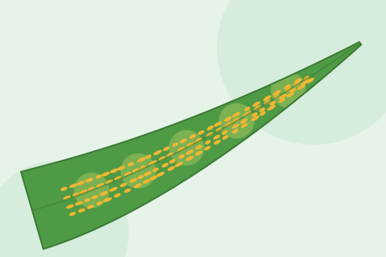
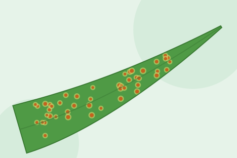

Yellow (Stripe) Rust
Yellow-orange powdery pustules arranged in stripes along wheat leaves.
View details
Long, dark reddish-brown powdery pustules on wheat stems and leaves that tear open the plant skin.
Stem rust, also called black rust, is a fungal disease of wheat. It forms long, dark reddish-brown pustules full of powdery spores on stems, leaf sheaths, leaves and even the ears. Each pustule makes thousands of spores, so the disease can build up fast. Badly infected stems become weak, grains stay thin and shrivelled, and plants can fall over.
Stem rust likes warmer weather than yellow rust or leaf rust, so it is usually seen late in the season, around and after heading. In Pakistan it is recorded every year in the warmer south, mainly in Sindh, with fewer reports from southern Punjab, often in late-sown fields. A dangerous group of stem rust races called Ug99 has spread in Africa and the Middle East, but earlier surveys did not find it in Pakistan. Report heavy stem rust to your agriculture department so samples can be checked.
Main cause: Puccinia graminis f. sp. tritici.
When to call an expert: Contact your agriculture officer at once if you see stem rust on many plants before the grain has filled, or if a variety sold as resistant is badly infected, because a new race may be involved.
Small, round orange-brown pustules mostly on the upper side of leaves, not long dark pustules on stems that tear the skin.
Yellow-orange pustules in neat stripes on leaves, usually earlier in cooler weather.
Dark brown dead spots on leaves with no powder that rubs off.
This guide is for general information only and is not a diagnosis. We never recommend medicine doses. Always follow the advice of your local agriculture officer. Last updated: October 2026.
Keep learning

Yellow-orange powdery pustules arranged in stripes along wheat leaves.
View details
Small, round, orange-brown powdery spots scattered across wheat leaves.
View details
Dark brown oval spots on wheat leaves that grow and join until leaves dry; worse in warm, humid weather.
View details